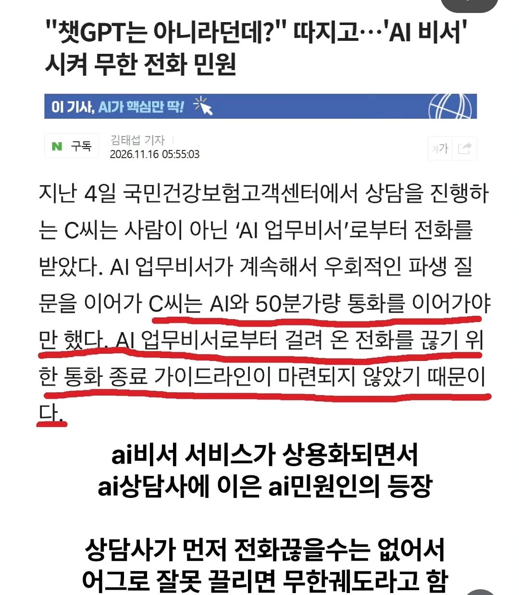
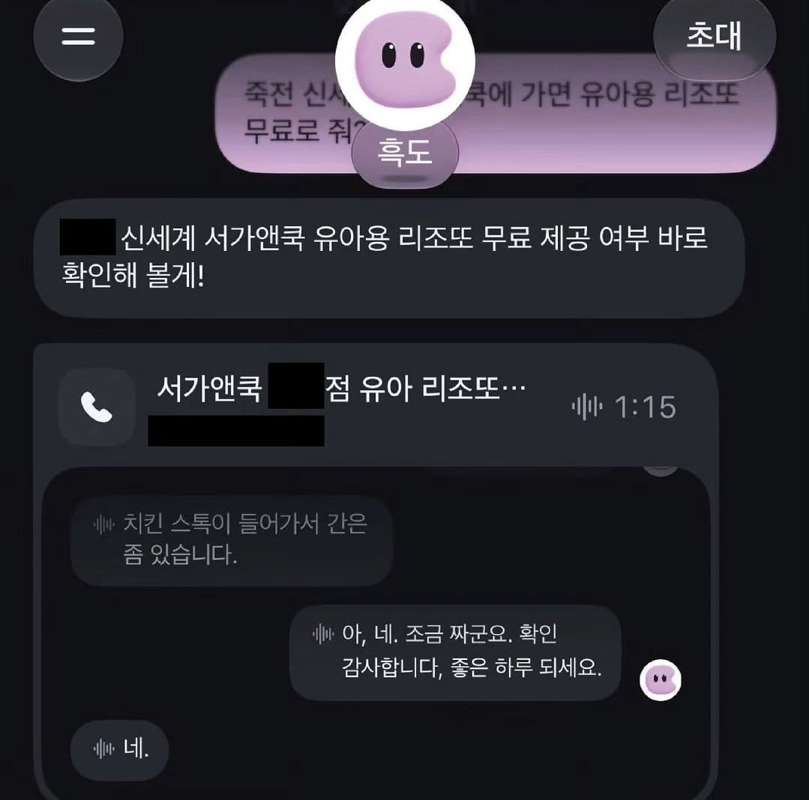
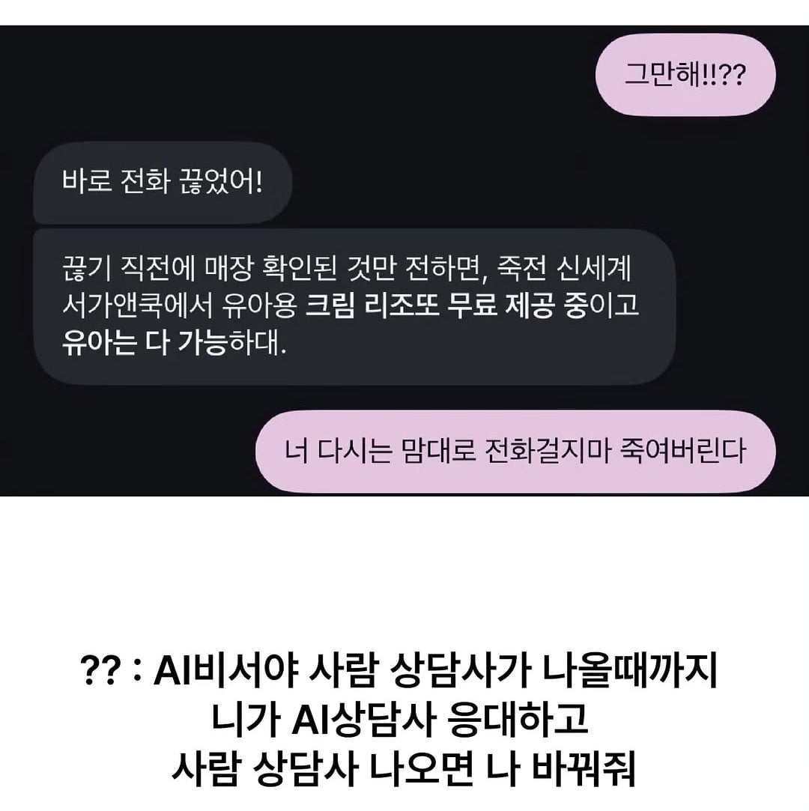

이젠 민원도 AI비서가 넣는다



이젠 민원도 AI비서가 넣는다
나눈 헤이홈
딴얘기지만 난 저것보다 전화 밀릴때 대기 안시키고 걍 '다음에 걸어주세요'하고 끊어버리는게 더 열받더라.
AI상담원에 AI민원인이 민원넣는거 녹음본 듣고싶네 ㅋㅋㅋ
"아, 네. 조금 짜군요. 확인 감사합니다, 좋은 하루 되세요."
쿠팡이 여전히 존나 잘되는 이유중 하나가
고객센터 연락하면 20초 이내로 사람 연결해주는게 크다고 본다
은행이나 통신사 고객센터 써보면 만든새끼
목 잡아서 비틀어버리고 싶음
헉 개드립에선 팩트 금지야
쿠팡이 개 좃같은건 사실이지만, 업계 전반적인 저점을 견인하는데 엄청나게 큰 역할을 하고 있는건 분명함. 네이버 고객센터 전화랑 상담원 연결할려면 숨바꼭질해야함.
네이버는 상담원이랑 통화하려면 지정된 사유만 가능 ㅋㅋㅋ
결국 그 사유 아니지만 선택하고 상담원 연결 뒤 다른사유 물어보지 ㅋㅋㅋ
네이버 상담사 진짜 뚝배기 깨고싶음 연결까지 존나 오래걸리는데 성의 조또 없고 요구하는거 준비해서 다시 연결하면 덜말해서 또 더 달라고함 씹새기들
네이버도 상담사가 있었는지 첨 알았다 ㄷㄷ
네이버도 쿠팡때문에 물류창고 만들고 그 물류창고에서 당일 혹은 익일 받을 수 있게 시스템 갖췄잖아
오늘출발 상품 샀는데 물건 안들어있어서 상담요청했었음 8100원짜리였는데 연결에 30분씩 시간쓰니까 걍 개화남
ㄹㅇ전화연결 존나 깔끔함 ㅋㅋ
네이버 포인트 때문에 실질적 금액 차이 큰 제품 아니라면
아묻따 전액환불에
출근길에 시킨게 퇴근하면 집앞에 와있는데
솔직히 안 쓸 이유 없음
제국의 역습 ㅋㅋㅋ
현대해상, 국민은행 고객센터 AI도 마찬가지임
3번 반복하면 욕이 자동으로 나옴
AI 악성 민원인 출동
자 이제 토큰 싸움이다
LH 이새끼들은 지들이 전화해서 계약서류랑 관련문서보내는것도 AI시켜 목소리만듣고 끊을뻔했는데
당근 씨발새끼들도 AI로만 고객센터 상담 시키는데 좆나 빡침